library(tidyverse)
data(iris)
# 品種ごとにグラフを分割
ggplot(iris, aes(x = Sepal.Length, y = Sepal.Width)) +
geom_point() +
facet_wrap(~ Species) +
labs(title = "品種別のがく片の長さと幅")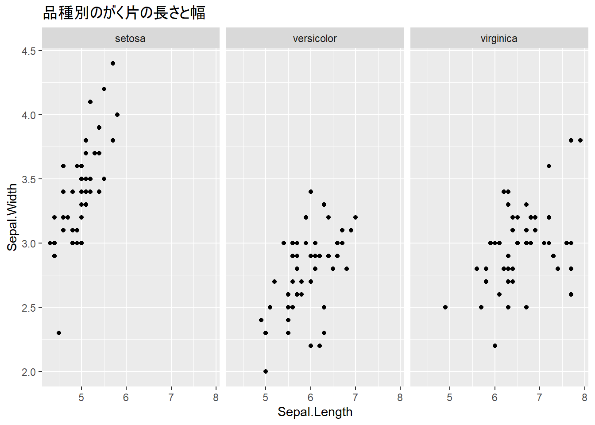
前章でggplot2の基本的なグラフ作成を学びました。この章では、より高度なテクニックを使って、プレゼンテーションやレポートで使える洗練されたグラフを作成する方法を学びます。
この章を読み終えると、以下ができるようになります。
ファセット機能を使うと、カテゴリごとにグラフを分割して表示できます。
1つの変数でグラフを分割します。facet_wrap(~ 変数)で、指定した変数のカテゴリごとにグラフが作成されます。
library(tidyverse)
data(iris)
# 品種ごとにグラフを分割
ggplot(iris, aes(x = Sepal.Length, y = Sepal.Width)) +
geom_point() +
facet_wrap(~ Species) +
labs(title = "品種別のがく片の長さと幅")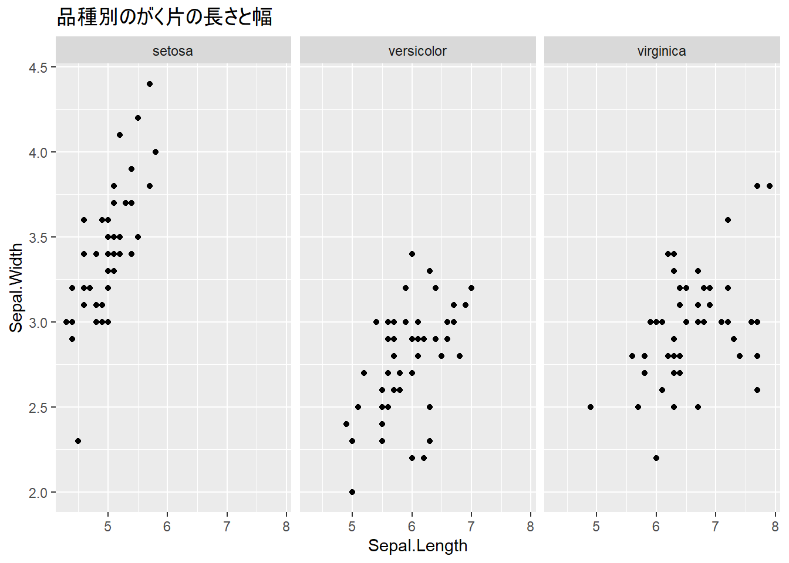
ncol引数を使って、列数を指定できます。
# 列数を指定（2列で表示）
ggplot(iris, aes(x = Sepal.Length, y = Sepal.Width)) +
geom_point() +
facet_wrap(~ Species, ncol = 2)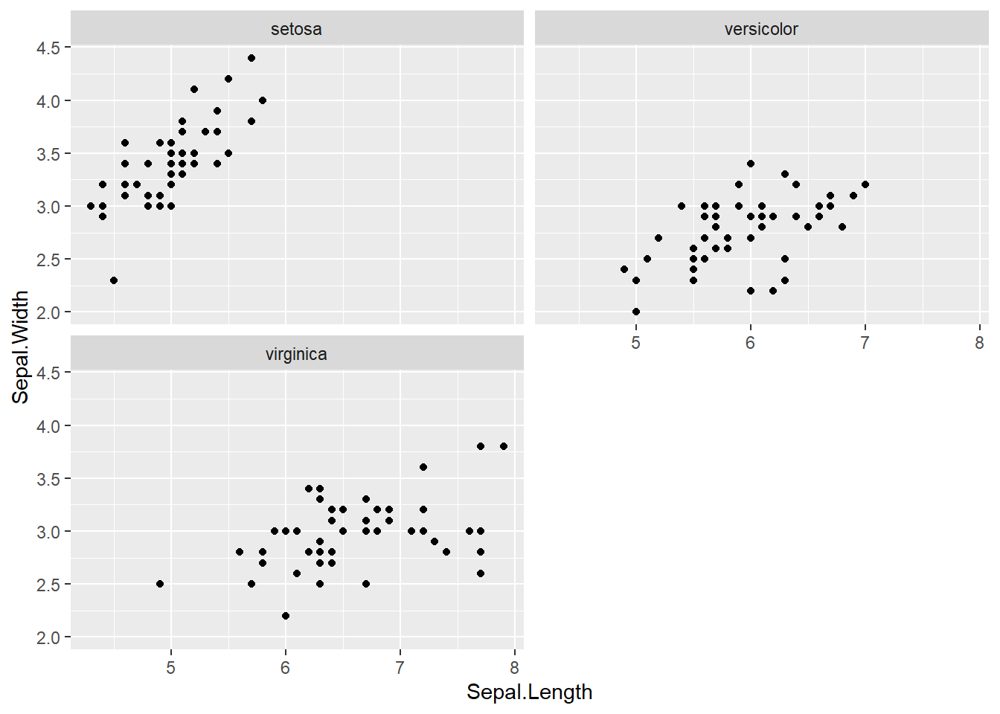
また、nrow引数を使って行数を指定することもできます。
# 行数を指定（1行で表示）
ggplot(iris, aes(x = Sepal.Length, y = Sepal.Width)) +
geom_point() +
facet_wrap(~ Species, nrow = 3)
2つの変数で行と列に分割します。facet_grid(行の変数 ~ 列の変数)で、指定した2つの変数の組み合わせごとにグラフが作成されます。
# サンプルデータの作成
sales_data <- data.frame(
四半期 = rep(c("Q1", "Q2", "Q3", "Q4"), each = 6),
地域 = rep(c("東日本", "西日本"), times = 12),
商品 = rep(c("商品A", "商品B", "商品C"), times = 8),
売上 = sample(100:500, 24)
)
# 四半期（行）× 地域（列）でグラフを分割
ggplot(sales_data, aes(x = 商品, y = 売上)) +
geom_col() +
facet_grid(四半期 ~ 地域)
color: 点や線の色fill: 棒や領域の塗りつぶし色# 棒グラフでfillを使用
iris_summary <- iris |>
group_by(Species) |>
summarize(平均 = mean(Sepal.Length))
ggplot(iris_summary, aes(x = Species, y = 平均, fill = Species)) +
geom_col() +
labs(title = "品種別平均がく片長")
手動で色を指定するには、scale_color_manual()やscale_fill_manual()を使います。
選び方として、colorを指定している場合はscale_color_manual()、fillを指定している場合はscale_fill_manual()を使います。
関数内のvalues引数に、カテゴリごとの色を指定します。
# 色を手動で指定
ggplot(iris, aes(x = Sepal.Length, y = Sepal.Width, color = Species)) +
geom_point(size = 3) +
scale_color_manual(
values = c(
"setosa" = "red",
"versicolor" = "blue",
"virginica" = "green"
)
)
既に用意されているカラーパレットを使うこともできます。RColorBrewerパッケージのカラーパレットを利用するには、scale_color_brewer()やscale_fill_brewer()を使います。
# Brewerカラーパレットを使用
ggplot(iris, aes(x = Sepal.Length, y = Sepal.Width, color = Species)) +
geom_point(size = 3) +
scale_color_brewer(palette = "Set1")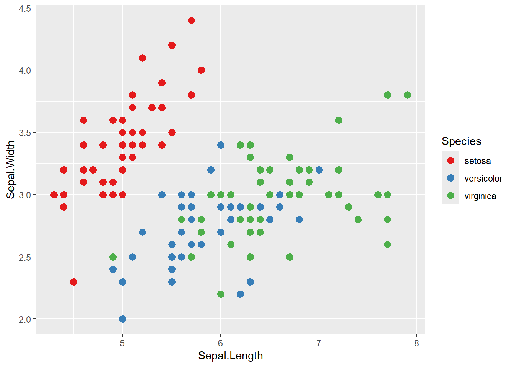
“Set1”の他にも、“Set2”, “Set3”, “Pastel1”, “Dark2”など、様々なカラーパレットが用意されています。
xlim()やylim()を使って、軸の表示範囲を指定できます。
ggplot(iris, aes(x = Sepal.Length, y = Sepal.Width)) +
geom_point() +
xlim(4, 8) + # x軸の範囲を4〜8に
ylim(2, 5) # y軸の範囲を2〜5に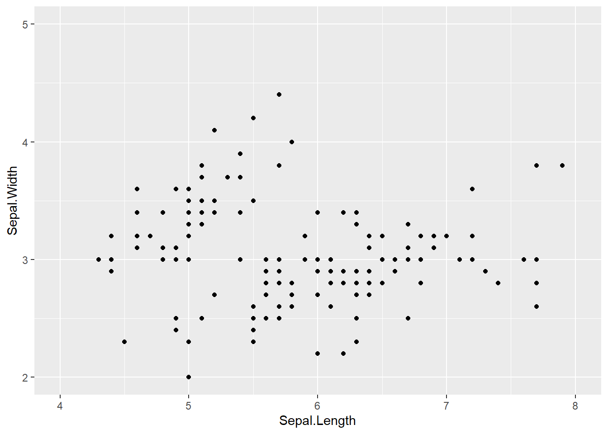
scale_x_continuous()やscale_y_continuous()を使って、軸の目盛りをカスタマイズできます。breaks引数で目盛りの位置を指定します。byを使うと、指定した幅で等間隔の目盛りを振ることができます。
ggplot(iris, aes(x = Sepal.Length, y = Sepal.Width)) +
geom_point() +
scale_x_continuous(breaks = seq(4, 8, by = 0.5)) +
scale_y_continuous(breaks = seq(2, 4.5, by = 0.5))
theme()関数を使うと、グラフの細部まで調整できます。
theme()には様々な要素があり、タイトルや軸ラベル、凡例のフォントサイズを調整できます。axis.*は軸のテキスト、legend.*は凡例のテキストを調整するための要素です。
element_text()はテキストのスタイルを指定するための関数で、face引数で文字のスタイル（例: “bold”, “italic”）を指定できます。size引数でフォントサイズを指定します。
ggplot(iris, aes(x = Sepal.Length, y = Sepal.Width, color = Species)) +
geom_point() +
labs(title = "がく片の長さと幅", x = "長さ (cm)", y = "幅 (cm)") +
theme_minimal() +
theme(
plot.title = element_text(face = "bold", size = 18),
axis.title = element_text(size = 14),
axis.text = element_text(size = 12),
legend.title = element_text(size = 14),
legend.text = element_text(size = 12)
)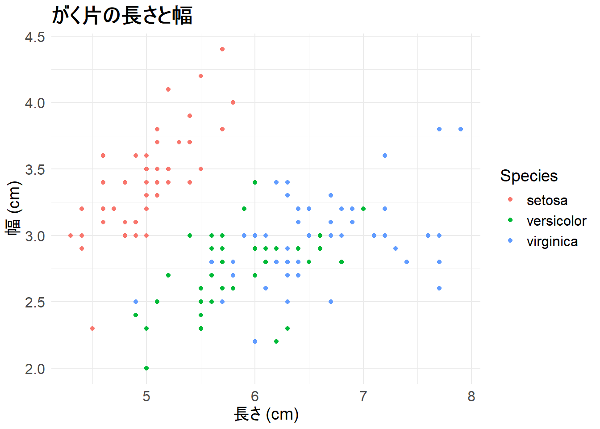
legend.positionで凡例の位置を変更できます。指定できる値は、“top”, “bottom”, “left”, “right”, “none”（凡例を表示しない）などがあります。
ggplot(iris, aes(x = Sepal.Length, y = Sepal.Width, color = Species)) +
geom_point() +
theme_minimal() +
theme(
legend.position = "top" # "bottom", "left", "right", "none"も可
)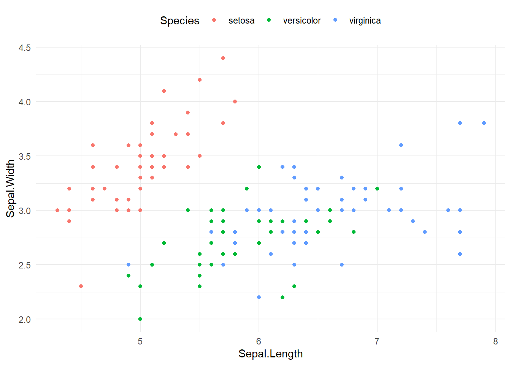
グラフの背景色を変更するには、panel.backgroundやplot.backgroundを調整します。panel.backgroundはグラフの背景、plot.backgroundはグラフ全体の背景を指定します。
element_rect()は矩形のスタイルを指定するための関数で、fill引数で背景色を指定します。
ggplot(iris, aes(x = Sepal.Length, y = Sepal.Width, color = Species)) +
geom_point() +
theme_minimal() +
theme(
panel.background = element_rect(fill = "lightgray"),
plot.background = element_rect(fill = "gray")
)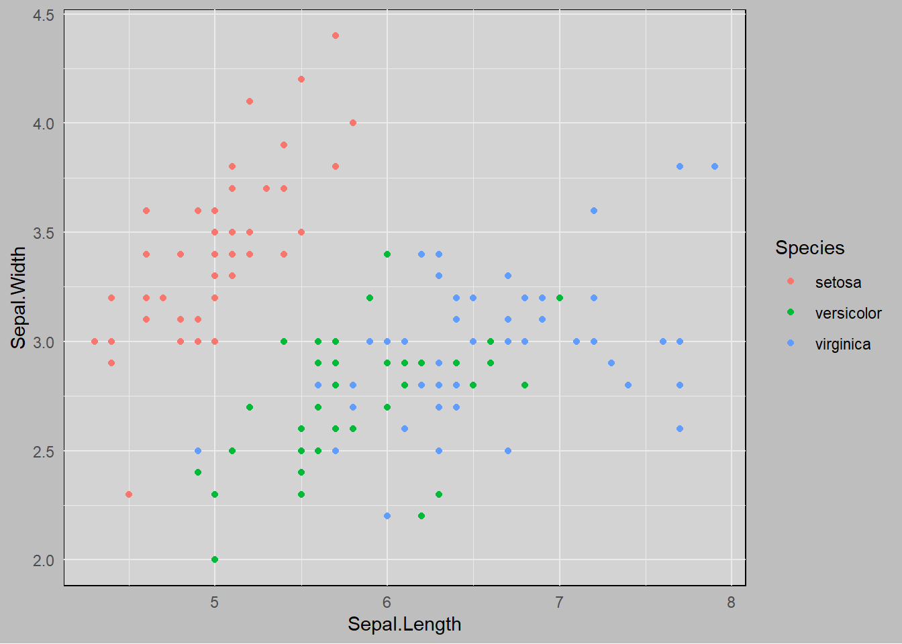
patchworkパッケージを使うと、複数のggplot2グラフを自由にレイアウトして配置できます。ファセット機能では同じデータから自動的に分割しますが、patchworkでは異なるグラフを組み合わせることができます。
# パッケージのインストール（初回のみ）
install.packages("patchwork")
# パッケージの読み込み
library(patchwork)グラフを変数に保存してから、演算子を使って配置します。
library(patchwork)
# 複数のグラフを作成
p1 <- ggplot(iris, aes(x = Sepal.Length, y = Sepal.Width)) +
geom_point(color = "steelblue") +
labs(title = "がく片")
p2 <- ggplot(iris, aes(x = Petal.Length, y = Petal.Width)) +
geom_point(color = "coral") +
labs(title = "花弁")
p3 <- ggplot(iris, aes(x = Species, fill = Species)) +
geom_bar() +
labs(title = "品種別データ数") +
theme(legend.position = "none")
p4 <- ggplot(iris, aes(x = Sepal.Length, fill = Species)) +
geom_histogram(bins = 15, alpha = 0.7) +
labs(title = "がく片長の分布")+演算子を使うと、グラフを横に並べることができます。
# 横に並べる
p1 + p2
/演算子を使うと、グラフを縦に並べることができます。
# 縦に並べる
p1 / p2
括弧を使って配置を制御できます。
# 2行2列に配置
(p1 + p2) / (p3 + p4)
|演算子を使うと、垂直方向の配置をより細かく制御できます。
# 左に大きなグラフ、右に2つのグラフを縦に配置
p1 | (p2 / p3)
plot_layout()で列数や行数、サイズ比を指定できます。
# 列数を指定
p1 + p2 + p3 + plot_layout(ncol = 2)
# サイズ比を指定（左のグラフを2倍の幅に）
p1 + p2 + plot_layout(widths = c(2, 1))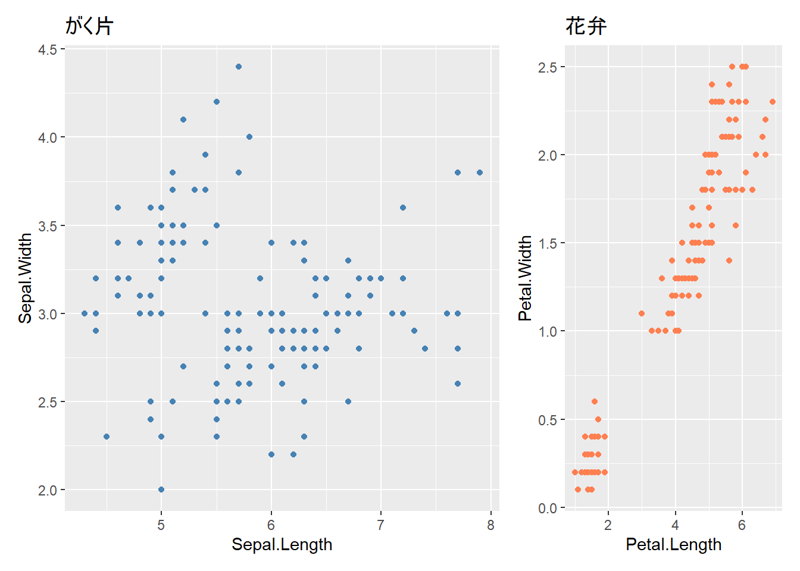
plot_annotation()で全体のタイトルを追加できます。
# 共通のタイトルを追加
(p1 + p2) / (p3 + p4) +
plot_annotation(
title = "アヤメデータの総合分析",
subtitle = "4つの観点からの可視化",
caption = "データ: iris dataset"
)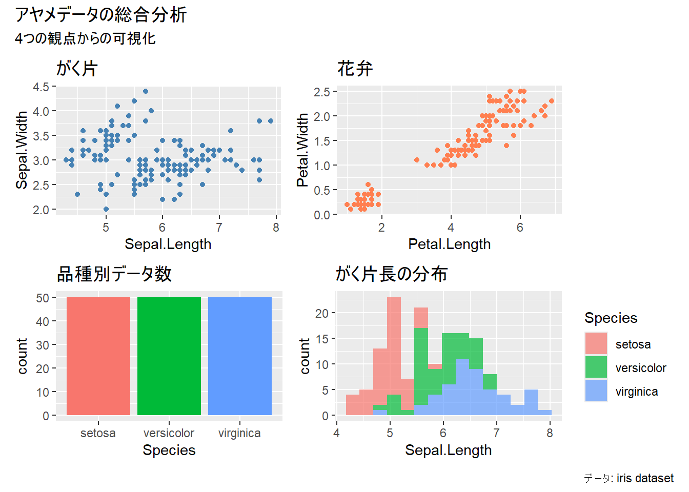
複数のグラフで共通の凡例を使う場合、plot_layout(guides = "collect")で凡例をまとめることができます。
# 品種で色分けしたグラフを作成
p_sepal <- ggplot(iris, aes(x = Sepal.Length, y = Sepal.Width, color = Species)) +
geom_point() +
labs(title = "がく片")
p_petal <- ggplot(iris, aes(x = Petal.Length, y = Petal.Width, color = Species)) +
geom_point() +
labs(title = "花弁")
# 凡例を1つにまとめる
p_sepal + p_petal + plot_layout(guides = "collect")
# 最後に表示したグラフを保存
ggsave("outputs/my_plot.png")
# サイズを指定（インチ単位）
ggsave("outputs/my_plot.png", width = 8, height = 6)
# 解像度を指定（dpi）
ggsave("outputs/my_plot.png", width = 8, height = 6, dpi = 300)# PNG形式
ggsave("outputs/plot.png", width = 8, height = 6)
# PDF形式（ベクター形式、拡大しても綺麗）
ggsave("outputs/plot.pdf", width = 8, height = 6)
# JPEG形式
ggsave("outputs/plot.jpg", width = 8, height = 6)# グラフを変数に保存
my_plot <- ggplot(iris, aes(x = Sepal.Length, y = Sepal.Width, color = Species)) +
geom_point() +
labs(title = "がく片の長さと幅")
# 変数からグラフを保存
ggsave("outputs/iris_plot.png", plot = my_plot, width = 8, height = 6)これまで学んだテクニックを組み合わせて、レポートやプレゼンで使える完成度の高いグラフを作成してみましょう。
# データの準備
sales_summary <- data.frame(
月 = rep(1:12, times = 3),
商品 = rep(c("商品A", "商品B", "商品C"), each = 12),
売上 = c(
# 商品A
120, 135, 150, 145, 160, 175, 190, 185, 200, 210, 230, 250,
# 商品B
100, 110, 125, 130, 140, 155, 160, 165, 175, 185, 195, 210,
# 商品C
80, 90, 95, 100, 110, 120, 125, 130, 140, 150, 160, 175
)
)
# グラフの作成
final_plot <- ggplot(sales_summary, aes(x = 月, y = 売上, color = 商品)) +
geom_line(linewidth = 1.2) +
geom_point(size = 3) +
scale_x_continuous(breaks = 1:12) +
scale_color_brewer(palette = "Set1") +
labs(
title = "2025年 商品別月次売上推移",
subtitle = "全店舗合計",
x = "月",
y = "売上（万円）",
color = "商品カテゴリ",
caption = "データ：社内売上システムより"
) +
theme_minimal() +
theme(
plot.title = element_text(size = 18, face = "bold"),
plot.subtitle = element_text(size = 14, color = "gray40"),
axis.title = element_text(size = 14),
axis.text = element_text(size = 12),
legend.position = "top",
legend.title = element_text(size = 12),
legend.text = element_text(size = 11),
panel.grid.minor = element_blank(), # 細かい補助線を削除
plot.caption = element_text(size = 10, hjust = 0, color = "gray50")
)
print(final_plot)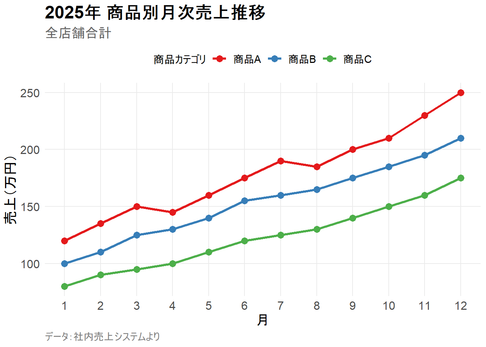
irisデータで、品種ごとにヒストグラムをファセット表示してください。x軸はSepal.Lengthです。
解答例
ggplot(iris, aes(x = Sepal.Length)) +
geom_histogram(bins = 15, fill = "steelblue") +
facet_wrap(~ Species) +
labs(title = "品種別がく片長の分布")irisデータで以下の条件を満たす散布図を作成してください。
Petal.Length, y軸: Petal.Widththeme_classic()に設定解答例
ggplot(iris, aes(x = Petal.Length, y = Petal.Width, color = Species)) +
geom_point(size = 3) +
labs(
title = "花弁の長さと幅の関係",
x = "花弁の長さ (cm)",
y = "花弁の幅 (cm)",
color = "品種"
) +
theme_classic() +
theme(legend.position = "bottom")この章では、ggplot2の発展的なテクニックを学びました。
facet_wrap(), facet_grid()）で複数グラフを並べて表示theme()による細かいカスタマイズpatchworkで異なるグラフを自由に配置ggsave()によるグラフの保存これで、プレゼンテーションやレポートで使える、洗練されたグラフを作成できるようになりました。
ここまでで、データ分析の基本的な流れを習得しました。
2026年2月現在、作成済みの章はここまでですが、今後内容の拡充を予定しています。特に、データの加工や再現可能な研究の章を充実させていく予定です。